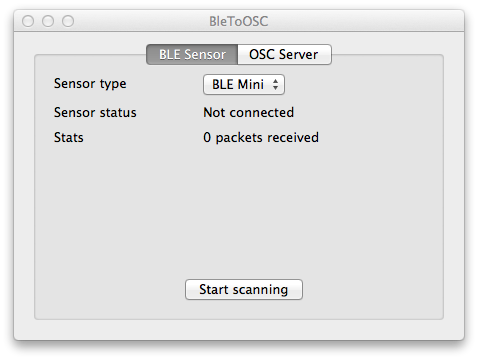
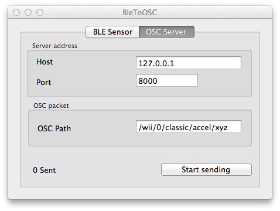

I built this sample Mac app to report accelerometer data acquired from Adafruit Flora, sent using BLE to the Mac and then converted in OSC format, for example to be forwarded to Osculator or similar apps.
Source code
You can find the source code at the following repository:
https://github.com/fibasile/BLE_to_OSC
Required hardware
The demo app was tested with the following:
- Adafruit Flora
- Adafruit LSM303 Accelerometer
- RedBear Lab BLE Mini
Connect the LSM303 accelerometer to Flora SDL and SCL, 3.3v and GND pins.
Connect the BLE mini TX to Flora RX and RX to Flora TX, 3.3v and GND pins.
Add a Lipo battery or plug in the USB cable to the Flora.
Required software
Make sure you checkout the repository using the recursive option, so you also get the submodules containing all the required dependencies into the deps folder.
Instructions
Make sure you have installed the Adafruit_LSM303 library in your Arduino Library folder.
Open the Adafruit Arduino IDE version, and load the FloraAccel.ino sketch you find in the folder.
This sketch uses the Firmata protocol, sending SYSEX messages containing the readings from the accelerometer. The only thing which is custom is that since accelerometer produces signed integers, those are sent as two bytes instead of one per axis.
Now compile the Mac project BleToOSC using XCode and run it.
Screenshots
 
You can configure:
- In the BLE Sensor tab: the kind of bluetooth low energy modem, currently only Ble Mini is supported, but a Xadow version will be added soon.
- In the OSC Server tab: the OSC server host and port number, and also the path that will show up in OSC server. The example uses a naming similar to what you might use for a Nintendo Wii Nunchuck controller.
Comments !